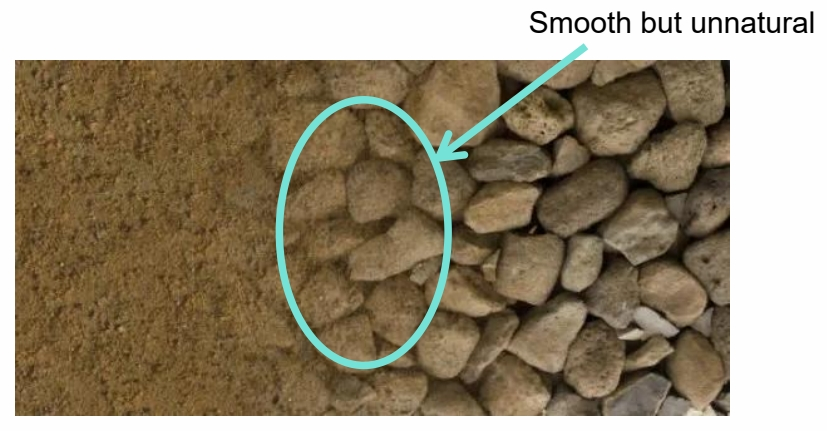
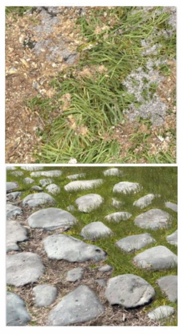
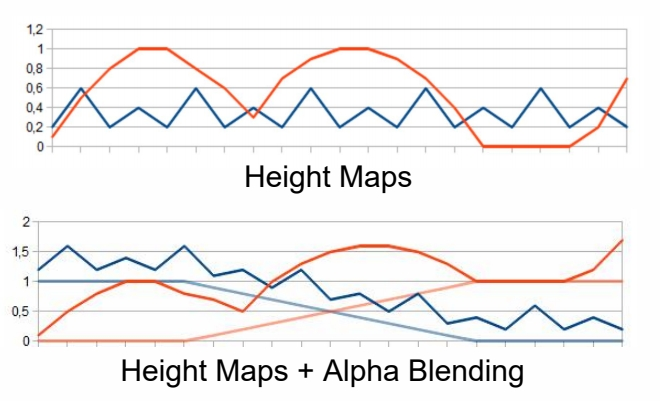
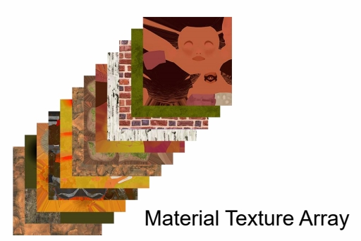

Paint Terrain Materials
Terrain Materials Splatting
Splat Map：每一个 channel 定义了一种材质的权重。又称为材质混合。

Simple Texture Splatting
简单的Texture Splatting会混合出为种效果：

但真实的材质过渡不是这种柔和渐变的过渡，而应该是这种：

Advanced Texture Splatting
解决方法：利用 height 调整权重

float3 blend(float4 texture1, float height1, float4 texture2, float height2)
{
return height1 > height2 ? texture1.rgb : texture2.rgb;
}

Advanced Texture Splatting - Biased
存在的问题，相机移到时有抖动现象 解决方法：引入 height bias


Links: https://www.gamedeveloper.com/programming/advanced-terrain-texture-splatting
Sampling from Material Texture Array

实践中会用到很多帧图，通常把它们 patch 成 Texture Array。
Expensive Material Blending
-
Many Texturing - Low performance when multiple materials are sampled too many times
-
Huge Splat Map - We only see a small set of terrain, but we load splat maps for 100 square km into video memory

整个场景包含很多纹理，Texture Array 涉及内存的来回寻址，效率比较低。但实际上一个像素会用到的纹理种类很少。
Virtual Texture
- Build a virtual indexed texture to represent all blended terrain materials for whole scene
- Only load materials data of tiles based on view- depend LOD
- Pre-bake materials blending into tile and store them into physical textures

思想，只把用到的纹理加到内存、其它的纹理放在硬盘中。类似于mipmap＋oS 分页机制。
优点：(1) 极大地减少了显存的占用
(2) 像素的 blending，在 tile 被加载到内存时算好就不动了，直到这个 tile 被置换出内存。
这个是目前的主流方法。
Floating-point Precision Error
浮点数的精度溢出
float 存储数据时，数值越大精度越低。精度太低就会引起抖动。
地图太大时，这种情况很常见。
Camera-Relative Rendering
解决方法：坐标系调整到相机中心(很多引擎的标准做法) 仿真时也会有同样的问题。
- Translates objects by the negated world space camera position before any other geometric transformations affect them
- It then sets the world space camera position to 0 and modifies all relevant matrices accordingly
本文出自CaterpillarStudyGroup，转载请注明出处。
https://caterpillarstudygroup.github.io/GAMES101_mdbook/